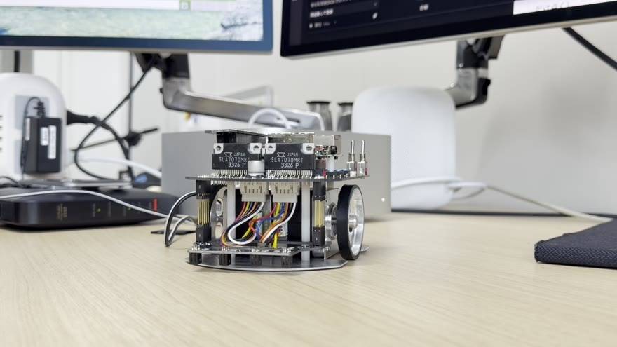
指ダンスは、カメラに映った人の手の形と人差し指の向きを読み取り、それに合わせてロボットを走らせたり、その場で回したり、左右に小刻みに振って踊らせたりするシステムである。ロボットには Raspberry Pi Mouse V3 を使い、chibamouse1 という名前を付けている。この資料では、これを「ロボット」と呼ぶ。手の形を読み取る処理は、ロボットではなく Mac Studio（以下「Mac」）で行い、結果として求めた速度の指令だけを Wi-Fi でロボットに送る。
図 1-1 は、人からロボットまでの流れを示したものである。人がカメラの前で手の形を見せると、Mac が映像から手を検出し、手の形を判定して、速度の指令を作る。ロボットは、受け取った速度の指令どおりに左右の車輪を回す。図 1-2 は、使っているロボットの写真である。
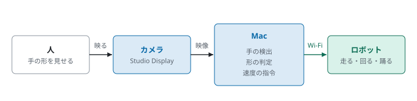

指ダンスが読み取る手の形は、人差し指・チョキ・グー・パーの 4 つと、それ以外の形、手が映っていない状態の、合わせて 6 つである。この資料では、これらをまとめて「手の形」と呼ぶ。表 1-1 は、手の形とロボットの動きの対応をまとめたものである。ロボットが動くのは人差し指とチョキのときだけであり、そのほかの手の形ではロボットは止まる。人差し指のときは、指の向きによって動きが変わる。指の向きと動きの関係は 5 章で説明する。
| 手の形 | 写真 | ロボットの動き |
|---|---|---|
| 人差し指 | 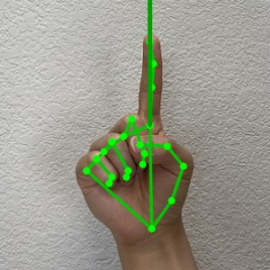 | 指の向きに合わせて走る。上で前進、左右に傾けるとその向きに旋回、下で後退 |
| チョキ | 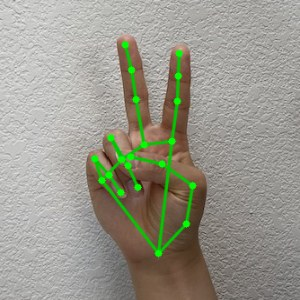 | その場で左右に小刻みに振る。これを「踊り」と呼ぶ |
| グー | 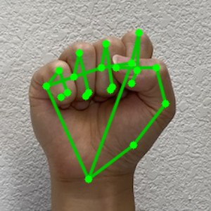 | 止まる |
| パー・その他・手なし | — | 止まる |
指ダンスは、Mac、カメラ、研究用ルータ、ロボットの 4 つの機器で動く。表 2-1 は、それぞれの機器の役割を示したものである。カメラは Mac につないだ Studio Display に付いているものを使う。研究用ルータは、Mac とロボットをつなぐための Wi-Fi ルータであり、インターネットにはつながっていない。
図 2-1 は、機器のつながりを示したものである。Mac は有線で学校の LAN につながり、インターネットはこちらから使う。Mac の Wi-Fi は研究用ルータにつなぎ、ロボットも同じ研究用ルータに Wi-Fi でつながる。ロボットの Raspberry Pi 3 は 2.4 GHz の Wi-Fi にしかつながらないので、研究用ルータは 2.4 GHz で使う。ロボットの IP アドレスは、研究用ルータの設定で <ロボットのIP> に固定している。
| 機器 | 製品 | 役割 |
|---|---|---|
| Mac | Mac Studio（Apple M1 Max、macOS） | カメラの映像から手を検出し、速度の指令を作ってロボットに送る |
| カメラ | Studio Display のカメラ | 人の手を写す。映像はブラウザで受け取る |
| 研究用ルータ | BUFFALO の Wi-Fi ルータ（SSID <研究用ルータのSSID>） | Mac とロボットを 2.4 GHz の Wi-Fi でつなぐ |
| ロボット | Raspberry Pi Mouse V3 ＋ Raspberry Pi 3 Model B | 速度の指令を受け取り、左右の車輪を回す |

Mac では、Docker のコンテナの中で ROS 2 Jazzy を動かす。この資料では、このコンテナを「コンテナ」と呼ぶ。Docker Desktop のコンテナからは Mac のカメラを直接使えないので、カメラの映像はブラウザで受け取り、ブラウザからコンテナへ送る。このために使うページ camera.html を、この資料では「カメラページ」と呼ぶ。ロボットの Raspberry Pi 3 では、Ubuntu 24.04 の上で ROS 2 Jazzy を動かす。
図 2-2 は、Mac とロボットで動くソフトウェアを示したものである。ROS 2 では、1 つの働きをする 1 つのプログラムを「ノード」と呼び、ノードどうしは「トピック」という名前の付いた通り道でデータをやり取りする。コンテナでは、カメラページから映像を受け取る rosbridge_websocket、手を検出する finger_detect、速度の指令を作る finger_dance、検出の結果を表示する rqt_image_view の 4 つのノードが動く。ロボットでは、モータと光センサを扱う raspimouse ノードが動く。表 2-2 は、使っているソフトウェアとその版を示したものである。
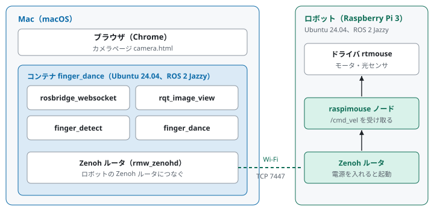
| ソフトウェア | 版 | 使う場所と用途 |
|---|---|---|
| ROS 2 | Jazzy | コンテナとロボット。ノードどうしの通信 |
| Ubuntu | 24.04 | コンテナとロボットの OS |
| rmw_zenoh | Jazzy 用 | コンテナとロボットの間の ROS 2 の通信方式 |
| MediaPipe | 1.1.1 | コンテナ。手の検出（Hand Landmarker） |
| OpenCV | 4.11 | コンテナ。画像の読み込みと描画 |
| NumPy | 1.26.4 | コンテナ。画像のデータ。2 系は OpenCV と合わないので 1 系を使う |
| コンテナの元のイメージ | tiryoh/ros2-desktop-vnc:jazzy | コンテナ。ROS 2 とデスクトップ画面。版はダイジェストで固定している |
| Docker Desktop | Docker Engine 29.8 | Mac。コンテナを動かす |
| Chrome | — | Mac。カメラページを開く |
ROS 2 の標準の通信方式は、起動したノードが「誰かいますか」という知らせを同じネットワーク全体に流し、返事をくれた相手と通信を始める。ところが、Docker Desktop のコンテナは、Mac の中に作られた Linux の仮想マシンの中で動いており、コンテナの IP アドレスは 172.17.0.x という、Mac の外からは見えない番号になる。図 2-3 は、このときの様子を示したものである。コンテナが流した「誰かいますか」は仮想マシンの外へ出ないので、ロボットはコンテナを見つけられない。また、仮にロボットが返事をしようとしても、172.17.0.x にはロボットから届かない。
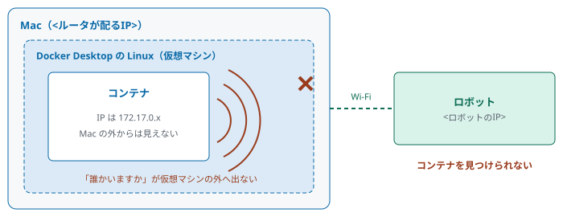
仮想マシンの中のコンテナからでも、外にある決まった IP アドレスへ自分からつなぎに行くことはできる。従って、コンテナとロボットの間は rmw_zenoh という通信方式でつなぐ。rmw_zenoh では、コンテナとロボットにそれぞれ「Zenoh ルータ」という中継のプログラムを置く。図 2-4 は、この接続を示したものである。ロボットの Zenoh ルータは、TCP の 7447 番ポートで待っている。コンテナの Zenoh ルータは、ロボットの IP アドレスと 7447 番を指定して、自分からロボットにつなぎに行く。一度つながると、この 1 本の接続で、指令もセンサの値も両方向に流れる。
コンテナの中の 4 つのノードは、同じコンテナの中の Zenoh ルータにだけつながり、ロボットに直接はつながらない。このようにすることで、ノードどうしのデータは、まずコンテナの Zenoh ルータに集まる。そのうえで、ロボットに受け取る相手がいるデータだけが、Wi-Fi を通ってロボットに送られる。
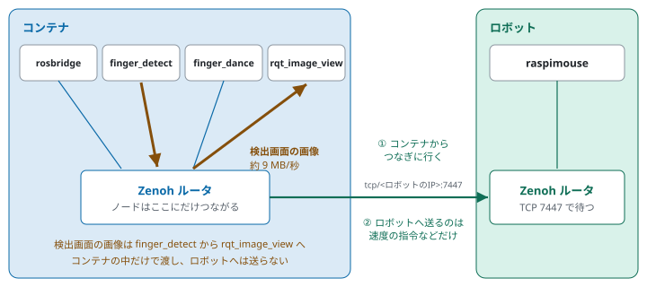
Zenoh ルータは、そのデータを受け取るノードがいる方向にだけデータを送る。ロボットで受け取るのは raspimouse ノードだけであり、raspimouse ノードが受け取るのは速度の指令とモータの電源の指示である。従って、表 2-3 のとおり、Wi-Fi を通るのはこの 2 つだけになる。例えば、検出画面の画像は 1 枚約 900 KB で、1 秒に 10 枚流すと 1 秒に約 9 MB になり、Raspberry Pi 3 の 2.4 GHz の Wi-Fi で送れる量を大きく超える。しかし、この画像を流す finger_detect と受け取る rqt_image_view は、どちらもコンテナの中にいる。図 2-4 の黄土色の矢印のとおり、画像は finger_detect からコンテナの Zenoh ルータを通って rqt_image_view に渡り、ロボットに受け取るノードがいないので、ロボットへは送られない。従って、Wi-Fi の負担にはならない。カメラの映像と手の形・指の向きも、同じようにコンテナの中だけで受け渡される。
| データ | トピック | 大きさの目安 | Wi-Fi |
|---|---|---|---|
| カメラの映像 | /image_raw/compressed | 1 枚数十 KB、1 秒に最大 10 枚 | 通らない |
| 検出画面の画像 | /finger_image | 1 枚約 900 KB、1 秒に最大 10 枚 | 通らない |
| 手の形と指の向き | /finger_gesture | 1 回約 50 バイト、1 秒に最大 10 回 | 通らない |
| 速度の指令 | /cmd_vel | 1 回数十バイト、1 秒に 10 回 | 通る |
| モータの電源の指示 | /motor_power | 起動と終了のときに 1 回ずつ | 通る |
コンテナの Zenoh ルータを起動してロボットにつなぐ作業は、コンテナで robot_connect <ロボットのIP> を実行すると、まとめて行われる。図 2-5 の上の段は、このコマンドが行う 4 つの処理である。つなぎ先をファイル ~/.robot_ip に保存しておくので、新しく開いた端末でも、同じつなぎ先と通信方式が自動で使われる。
ROS 2 では、ROS_DOMAIN_ID という番号が同じノードどうしだけが通信する。図 2-5 の下の段は、その例である。指ダンスでは、コンテナとロボットの ROS_DOMAIN_ID をどちらも 30 にしている。このようにすることで、同じ Mac やネットワークで ROS_DOMAIN_ID 0 などのほかのノードが動いていても、指令が混ざらない。
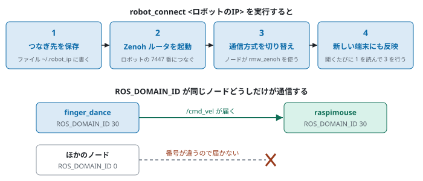
図 3-1 は、ノードとトピックのつながりを示したものである。四角がノード、矢印がトピックであり、矢印の向きにデータが流れる。カメラページは、カメラの映像を JPEG にして、WebSocket で rosbridge_websocket に送る。rosbridge_websocket は、それを /image_raw/compressed というトピックに流す。finger_detect はその画像から手を検出し、手の形と人差し指の向きを /finger_gesture に流す。finger_dance はそれを受け取って速度の指令を作り、/cmd_vel でロボットの raspimouse ノードに送る。
finger_detect は、手の点と判定の結果を描いた画像も作る。この画像は、表示用に非圧縮の /finger_image と、記録用に JPEG の /finger_image/compressed の 2 つのトピックに流す。この資料では、rqt_image_view がこの画像を表示する画面を「検出画面」と呼ぶ。
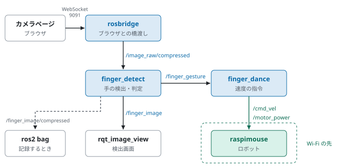
表 3-1 は、指ダンスで使っているトピックの一覧である。「流す」はそのトピックにデータを出すノード、「聞く」はそのデータを受け取るノードである。/finger_gesture は、文字列 1 本だけを持つ一番簡単な型 String に、JSON という書き方で手の形と指の向きを詰めたものである。例えば、人差し指を本人から見て左に 23.5° 傾けたときは、{"shape": "point", "angle": 23.5, "score": 0.97} となる。
| トピック | 型 | 流す | 聞く | 中身 |
|---|---|---|---|---|
/image_raw/compressed | CompressedImage | rosbridge | finger_detect | カメラの映像。640 × 480、JPEG。1 秒の枚数はカメラページで選ぶ（通常 10 枚） |
/finger_gesture | String（JSON） | finger_detect | finger_dance | 手の形（shape）、指の向き（angle、度）、確からしさ（score） |
/finger_image | Image | finger_detect | rqt_image_view | 手の点と判定の結果を描いた画像。非圧縮 |
/finger_image/compressed | CompressedImage | finger_detect | ros2 bag | 上と同じ画像の JPEG。動画を作るときに記録する |
/cmd_vel | TwistStamped | finger_dance | raspimouse | 速度の指令。前後の速さ（linear.x）と旋回の速さ（angular.z）。0.1 秒ごと |
/motor_power | SetBool（サービス） | finger_dance | raspimouse | モータの電源を入れる・切る。起動したときと終了するときに使う |
手の検出と手の形の判定は、finger_detect.py と hand_shape.py が行う。finger_detect.py は、画像が届くたびに次の順で処理する。
/finger_gesture に流し、点と判定の結果を描いた画像を /finger_image などに流す。Hand Landmarker は、動画用の VIDEO という使い方にしている。VIDEO では、前の画像で見つけた手の位置を手がかりにして次の画像の手を追いかける。このようにすることで、1 枚の処理時間は、手を追いかけている間は約 70 ms となり、毎回画像全体から手を探し直す場合の約 180 ms より短くなる。受け取る画像は「最新の 1 枚だけ」としており、処理が間に合わないときは古い画像を捨てるので、遅れがたまらない。
Hand Landmarker は、手首と指の関節・指先の、合わせて 21 か所の点を出す。点には 0 から 20 までの番号が決まっている。図 4-1 は、点の番号と、指ダンスが使う点を示したものである。手の形の判定には、手首（0）、4 本の指の第 2 関節（6・10・14・18）、指先（8・12・16・20）を使い、指の向きには人差し指の付け根（5）と指先（8）を使う。点の位置は画像の横・縦に対する割合（0〜1）で出てくるので、横は 640、縦は 480 を掛けて画素の単位に直してから、距離と角度を計算する。
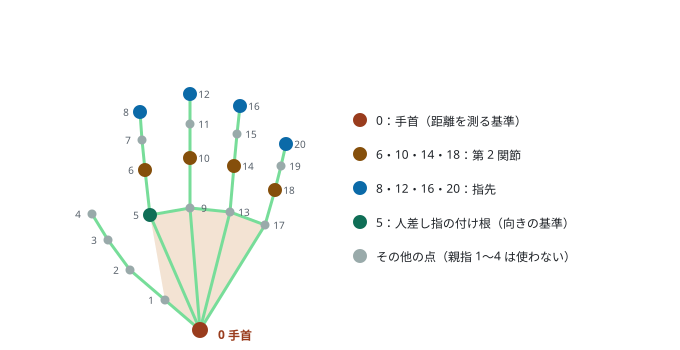
指を伸ばしていると、指先は手首から遠くなり、曲げると、指先は手のひらの側に戻って手首に近くなる。従って、手首から指先までの距離を、手首から第 2 関節までの距離と比べ、その比が 1.1 より大きければ「伸ばしている」と判定する。式で書くと次のとおりである。
（手首から指先までの距離）÷（手首から第 2 関節までの距離）＞ 1.1 → 伸ばしている
図 4-2 は、伸ばしている指と曲げている指で、この比を計算した例である。伸ばしている指では 260 ÷ 180 = 1.44 となり、曲げている指では 122 ÷ 160 = 0.76 となる。このように距離の比で判定することで、手を横や下に向けても同じように判定できる。ただし、指をカメラのほうに向けると、画像の上では指が短く見えるので、伸ばしていても比が小さくなり、曲げていると判定されることがある。
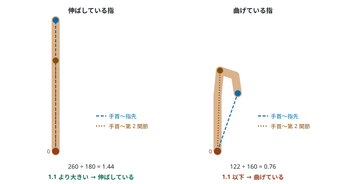
人差し指・中指・薬指・小指の 4 本について、伸ばしているかどうかを 4.3 節の方法で調べ、その組み合わせで手の形を決める。表 4-1 は、指の組み合わせと手の形の対応である。親指は、伸ばしているかどうかの判定が手の向きによって変わりやすいので、使わない。表 4-1 の写真は、実際に finger_detect が手の点を検出した結果を描いたものであり、緑の線が検出した手の骨組み、太い矢印が人差し指の向きである。
| 人差し指 | 中指 | 薬指 | 小指 | 手の形 | 写真 |
|---|---|---|---|---|---|
| 伸ばす | 曲げる | 曲げる | 曲げる | 人差し指（point） | |
| 伸ばす | 伸ばす | 曲げる | 曲げる | チョキ（peace） | |
| 曲げる | 曲げる | 曲げる | 曲げる | グー（fist） | |
| 伸ばす | 伸ばす | 伸ばす | 伸ばす | パー（open） | — |
| 上のどれでもない | その他（other） | — | |||
| 手が見つからない | 手なし（none） | — | |||
人差し指の向きは、人差し指の付け根（5）から指先（8）へ向かう線の向きを、真上を 0° として角度で表す。この資料では、この角度を「指の向き」と呼び、θ で表す。図 4-3 は、指の向きの決め方を示したものである。θ は、本人から見て左に傾けるとプラス、右に傾けるとマイナスになり、真横の左が +90°、真横の右が −90°、真下が ±180° である。
カメラの画像には、本人の左が画像の右に写る。従って、画像の上での付け根から指先への横のずれを vx（右がプラス）、縦のずれを vy（下がプラス）とすると、θ は次の式で求まる。この式では、画像の右へのずれがプラスの角度になり、それが本人から見た左に当たる。
θ = atan2( vx , −vy )
鏡に映したように左右が反転した映像を使う場合や、ロボットを本人と向かい合わせて鏡のように動かしたい場合は、パラメータ mirror を true にして、θ の符号を逆にする。
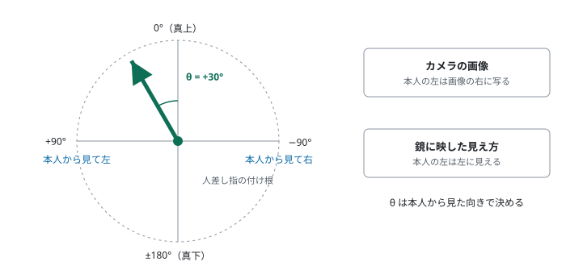
速度の指令は、finger_dance.py と mapping.py が作る。速度の指令は、前後の速さ v と旋回の速さ ω の 2 つの数でできている。v の単位は m/s で、前進がプラスである。ω の単位は rad/s で、上から見て左回り（反時計回り）がプラスである。ロボットは 2 つの車輪で走るので、横には動けない。従って、速度の指令はこの 2 つだけで足りる。finger_dance は、0.1 秒ごとに、その時点の手の形から速度の指令を決めて /cmd_vel に流す。
手の形が人差し指のときは、指の向き θ をジョイスティックのように使い、次の式で v と ω を決める。0.05 m/s と 1.0 rad/s は、それぞれの最大値である。
v = 0.05 × cos θ [m/s] ω = 1.0 × sin θ [rad/s]
このようにすることで、指を真上に向けると v が最大の前進になり、傾けるほど前進が遅くなって旋回が速くなる。真横に向けると、その場で回る。さらに、まっすぐ進みたいときに少しの傾きで曲がらないよう、真上と真下から ±10° 以内では ω を 0 にする。また、その場で回りたいときに少しの傾きで前後に動かないよう、真横から ±20° 以内では v を 0 にする。
図 5-1 は、指の向きとロボットの動きの関係を、指の付け根を中心にした円で示したものである。円の上が指の真上の向き、左が本人から見て左の向きに当たる。表 5-1 は、代表的な指の向きで、v と ω が実際にいくつになるかを示したものである。

| 指の向き θ | v [m/s] | ω [rad/s] | ロボットの動き |
|---|---|---|---|
| 0°（真上） | +0.050 | 0 | まっすぐ前進 |
| +30°（左に傾ける） | +0.043 | +0.50 | 前進しながら左に曲がる |
| +90°（真横の左） | 0 | +1.00 | その場で左に回る |
| −30°（右に傾ける） | +0.043 | −0.50 | 前進しながら右に曲がる |
| −90°（真横の右） | 0 | −1.00 | その場で右に回る |
| +150°（左下） | −0.043 | +0.50 | 後退しながら左に曲がる |
| ±180°（真下） | −0.050 | 0 | まっすぐ後退 |
検出した点の位置は画像ごとに少しずつ揺れるので、指の向きもそのまま使うと揺れる。従って、新しい指の向きと、それまでの指の向きを半分ずつ混ぜて使う。このとき、角度のまま平均すると、真下の付近で +179° と −179° を平均して 0° になってしまう。そこで、角度を向きの矢印（sin θ と cos θ の組）に直してから混ぜ、混ぜた矢印の向きを角度に戻す。混ぜる割合はパラメータ smoothing で決めており、0.5 である。
手の形がチョキのときは、v を 0 にし、ω を +1.0 rad/s と −1.0 rad/s に 0.4 秒ごとに切り替える。図 5-2 は、踊り始めてからの ω と、ロボットの向きの変わり方を示したものである。最初の 0.2 秒だけは半分の長さにしており、このようにすることで、ロボットの向きは踊り始めたときの向きを中心に、左右に約 11.5° ずつ振れる。1 回の振れ幅は、1.0 rad/s × 0.2 s = 0.2 rad であり、これが約 11.5° に当たる。
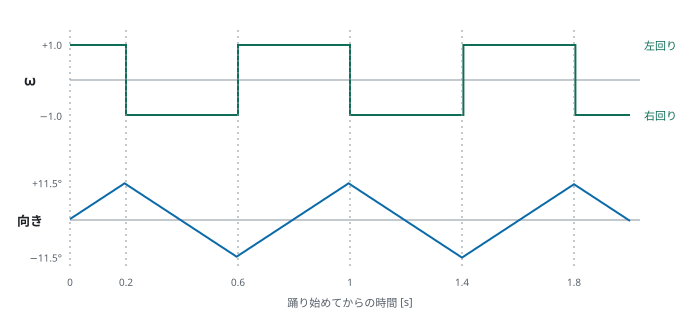
finger_dance は、ロボットの動きを「停止」「走る」「踊る」の 3 つの状態で管理する。図 5-3 は、状態の切り替わり方を示したものである。走り出す状態へ移るときは、同じ手の形を 2 回続けて受け取ったときに切り替える。これは、検出が一瞬だけ誤ったときにロボットが動き出さないようにするためである。一方、止まる状態へは、グー・パー・その他・手なしを 1 回受け取っただけですぐに切り替える。また、/finger_gesture が 0.5 秒届かないときも止まる。これは、カメラページを止めたときや、finger_detect が止まったときに、ロボットが最後の指令のまま走り続けないようにするためである。
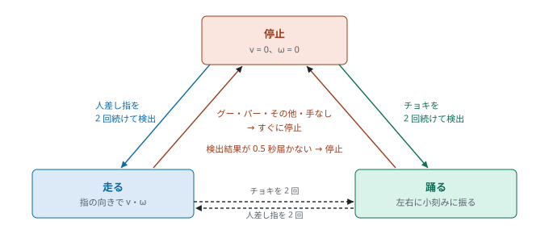
finger_dance は、起動すると /motor_power でロボットのモータの電源を入れる。終了するときは、v と ω が 0 の指令を送ってから、モータの電源を切る。ROS 2 の標準の終了処理では、Ctrl + C を押した後に指令を送れないので、終了処理を自分で行う設定（SignalHandlerOptions.NO）で起動している。
ロボットの Raspberry Pi 3 には、Ubuntu 24.04、ROS 2 Jazzy、rmw_zenoh、Raspberry Pi Mouse のドライバ rtmouse、raspimouse ノードが入っている。表 6-1 は、ロボットで使う設定をまとめたものである。電源を入れると、ドライバと Zenoh ルータは自動で起動し、約 43 秒で使えるようになる。raspimouse ノードは、SSH でロボットにログインして起動する。
| 項目 | 内容 |
|---|---|
| 名前 | chibamouse1 |
| IP アドレス | <ロボットのIP>。研究用ルータが、ロボットの Wi-Fi の MAC アドレス（<MACアドレス>）に対して配る |
| Wi-Fi の接続先 | <研究用ルータのSSID>（研究用ルータ）。設定は /etc/netplan/ にあり、chibamouse-wifi で見る・足す・消す |
| ログイン | ユーザ ubuntu。Mac の鍵 ~/.ssh/pimouse_ed25519 でログインする |
| ROS_DOMAIN_ID | 30。ロボットの ~/.bashrc に書いてあり、ログインすると設定される |
| 自動で起動するもの | ドライバ rtmouse（rtmouse.service）、Zenoh ルータ（zenoh-router.service、TCP 7447） |
| raspimouse ノード | ros2 launch raspimouse raspimouse.launch.py で起動する |
raspimouse ノードは、/cmd_vel で受け取った v と ω から左右の車輪の回る速さを計算して、モータを回す。表 6-2 は、指ダンスが使うものを中心に、raspimouse ノードのトピックとサービスをまとめたものである。オドメトリ（/odom）は、車輪の回転を測った値ではなく、受け取った指令から計算した値である。
| 名前 | 型 | 中身 |
|---|---|---|
/cmd_vel | TwistStamped（聞く） | 速度の指令 |
/motor_power | SetBool（サービス） | モータの電源を入れる（true）・切る（false） |
/odom | Odometry（流す） | 指令から計算したロボットの位置と向き |
/light_sensors | LightSensors（流す） | 前方の 4 つの光センサの値。1 秒に約 90 回 |
指ダンスのファイルは、すべて研究フォルダ chibariyo-dance-mimic の中にある。コンテナの ~/ros2_ws は、研究フォルダの ros2_ws とつながっているので、コンテナで作ったファイルも研究フォルダに残る。表 7-1 は、ファイルとその役割の一覧である。
| ファイル | 動く場所 | 役割 |
|---|---|---|
ROS 2 のパッケージ finger_dance（ros2_ws/src/finger_dance/） | ||
finger_dance/finger_detect.py | コンテナ | ノード。カメラの映像から手を検出し、/finger_gesture と検出画面の画像を流す（4 章） |
finger_dance/hand_shape.py | コンテナ | 21 点から、指を伸ばしているか、手の形、指の向きを求める関数（4.3〜4.5 節） |
finger_dance/finger_dance.py | コンテナ | ノード。/finger_gesture から速度の指令を作り、/cmd_vel に流す。状態の切り替え、モータの電源（5 章） |
finger_dance/mapping.py | コンテナ | 指の向きから v・ω を求める関数と、踊りの ω を求める関数（5.2 節、5.4 節） |
launch/finger_dance.launch.py | コンテナ | rosbridge、2 つのノード、検出画面をまとめて起動する。turtlesim も起動できる |
package.xml、setup.py、setup.cfg | コンテナ | パッケージの設定 |
コンテナ（docker/） | ||
Dockerfile | Mac | コンテナのイメージ finger-dance:jazzy を作る。ROS 2 のパッケージ、MediaPipe、手のモデルを入れる |
compose.yaml | Mac | コンテナ finger_dance の設定。ポート 6081（デスクトップ画面）と 9091（rosbridge） |
robot.bash | コンテナ | robot_connect・robot_disconnect・set_domain_id の 3 つのコマンド |
camera.html | Mac のブラウザ | カメラページ。カメラの映像を JPEG にして rosbridge に送る |
ロボット（chibamouse/） | ||
chibamouse-setname | ロボット | SD カードを複製したときに、名前・machine-id・SSH のホスト鍵・ROS_DOMAIN_ID を設定する |
chibamouse-wifi | ロボット | Wi-Fi の接続先を見る・足す・消す |
作り方.md | — | ロボットの SD カードの作り方 |
| 記録と動画 | ||
ros2_ws/tools/bag_to_mp4.py | コンテナ | ros2 bag で記録した検出画面の画像を、時刻どおりの MP4 にする |
tools/combine.sh | Mac | iPhone で撮ったロボットの動画と検出画面の動画を、時刻を合わせて左右に並べる |
ros2_ws/bags/ | — | ros2 bag の記録と、作った MP4 を置く |
ros2_ws/ros_domain_id.txt | コンテナ | コンテナの ROS_DOMAIN_ID（30） |
2 つのノードの動きは、ROS 2 のパラメータで変えられる。launch で起動するときは、表 8-1 の引数で一部を変えられる。表 8-2 は、ノードのパラメータとその既定値の一覧である。ノードを 1 つずつ起動するときは、ros2 run finger_dance finger_dance --ros-args -p linear_max:=0.03 のようにパラメータを指定する。
| 引数 | 既定値 | 意味 |
|---|---|---|
turtlesim | false | true にすると、ロボットの代わりに turtlesim を起動して亀を動かす |
rosbridge_port | 9091 | rosbridge のポート。カメラページの ?port= と同じにする |
view | true | 検出画面を開くか |
mirror | false | finger_detect の mirror（表 8-2） |
| ノード | パラメータ | 既定値 | 意味 |
|---|---|---|---|
| finger_detect | mirror | false | true にすると、指の向き θ の符号を逆にする（4.5 節） |
| finger_detect | ext_ratio | 1.1 | 指を伸ばしていると判定する距離の比（4.3 節） |
| finger_detect | model | /opt/finger_dance/ hand_landmarker.task | Hand Landmarker のモデルファイル |
| finger_dance | turtlesim | false | true にすると、turtlesim の亀に Twist で指令を送る |
| finger_dance | linear_max | 0.05 | 前後の速さ v の最大値 [m/s]。turtlesim では 1.0 |
| finger_dance | angular_max | 1.0 | 旋回の速さ ω の最大値 [rad/s]。turtlesim では 1.5 |
| finger_dance | dance_angular | 1.0 | 踊りの ω [rad/s]。turtlesim では 3.0 |
| finger_dance | dance_period | 0.4 | 踊りで左右を切り替える間隔 [s] |
| finger_dance | straight_band | 10 | 真上・真下から何度以内で ω を 0 にするか [度] |
| finger_dance | side_band | 20 | 真横から何度以内で v を 0 にするか [度] |
| finger_dance | timeout | 0.5 | /finger_gesture がこの時間 [s] 届かなければ止まる |
| finger_dance | confirm | 2 | 走る・踊るへ切り替えるまでに、同じ手の形を続けて受け取る回数 |
| finger_dance | smoothing | 0.5 | 指の向きを混ぜる割合。0 でそのまま、1 に近いほどなめらかだが遅れる（5.3 節） |
| finger_dance | stamped | true | 速度の指令の型。true で TwistStamped、false で Twist |
| finger_dance | cmd_topic | /cmd_vel | 速度の指令を流すトピック |
| finger_dance | motor_power | true | 起動・終了のときにモータの電源を入れる・切るか |
手の検出は、Mac のコンテナで 1 枚約 70〜180 ms かかる。ロボットの Raspberry Pi 3 は Mac よりはるかに遅く、メモリも 1 GB しかないので、同じ処理を 1 秒に何回も行うことはできない。従って、手の検出は Mac で行い、ロボットには速度の指令だけを送る。このようにすることで、Wi-Fi に流れるデータは 0.1 秒ごとの速度の指令だけになり、カメラの映像は Wi-Fi に流れない。
前後の速さの最大値は 0.05 m/s、旋回の速さの最大値は 1.0 rad/s にしている。ロボットのタイヤはゴムが滑りやすく、これより速いと、指令どおりに動かなくなるからである。旋回の速さ 1.0 rad/s のとき、車輪の速さは約 0.047 m/s であり、前後の最大値とほぼ同じになる。
指ダンスでは、迷ったときはロボットが止まるように作っている。走り出すには同じ手の形を 2 回続けて検出する必要があるが、止まるには 1 回で足りる。手が映らないとき、手の形が分からないとき、検出結果が 0.5 秒届かないときも止まる。このようにすることで、検出の誤りや通信の途切れがあっても、ロボットが勝手に走り続けることはない。ただし、走り出すまでに画像 2 枚分、約 0.2 秒の遅れが生じる。
親指は、ほかの 4 本と違って横に開くので、手首からの距離で伸ばしているかを判定すると、手の向きによって結果が変わりやすい。従って、手の形の判定には親指を使わない。このようにすることで、親指を立てていてもいなくても、同じ手の形として扱われる。例えば、親指だけを立てた手はグーと判定され、ロボットは止まる。
rqt_image_view に JPEG のトピック /finger_image/compressed を表示させると、rqt_image_view が起動した時点で finger_detect がまだ見つかっていない場合に、このトピックを非圧縮の画像のトピックと取り違え、何も表示しない。従って、finger_detect は表示用に非圧縮の /finger_image も流し、検出画面はそちらを表示する。非圧縮の画像は 1 枚約 900 KB と大きいが、受け取るのはコンテナの中の rqt_image_view だけなので、Wi-Fi には流れない。
Hand Landmarker は、1 本の手だけを検出する設定にしている。従って、操作する手のほかにもう一方の手が映っていると、そちらの手を検出して、操作する手を見ないことがある。操作しない手は、カメラに映らないところに置く。
hand_shape.py と mapping.py は ROS 2 を使わない関数だけでできており、ほかのロボットでもそのまま使える。伴走型スマート車いす「チバリヨカー」で使う場合は、finger_dance のパラメータを stamped:=false、cmd_topic:=/cmd_vel、motor_power:=false にし、速さの最大値を車いすに合わせて決める。人が乗る車いすでは、最大値を小さくしてから試す。